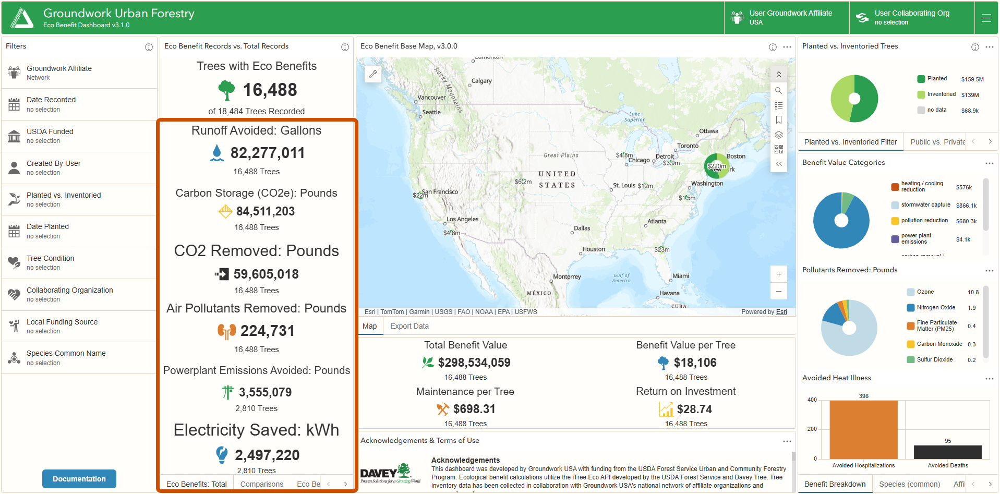
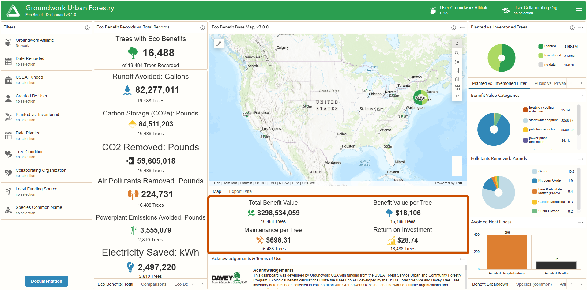
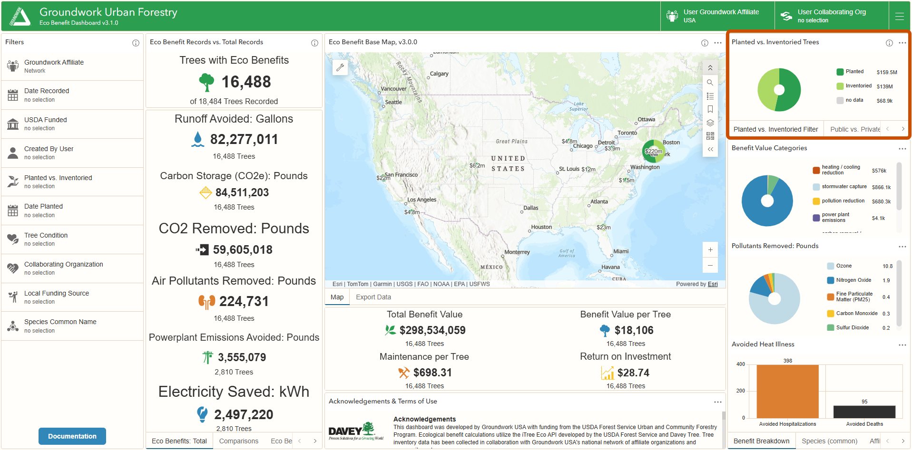
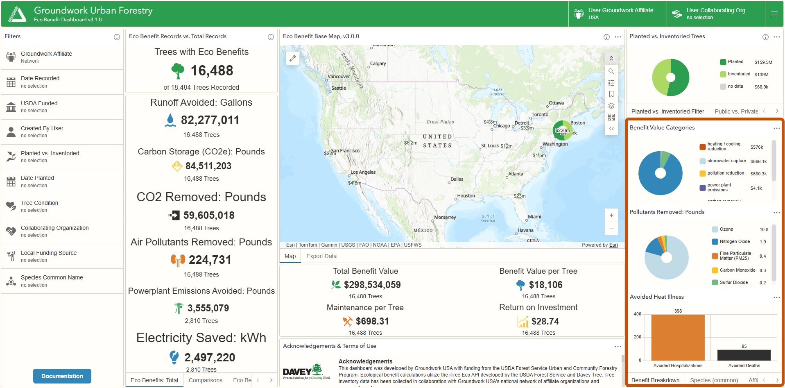
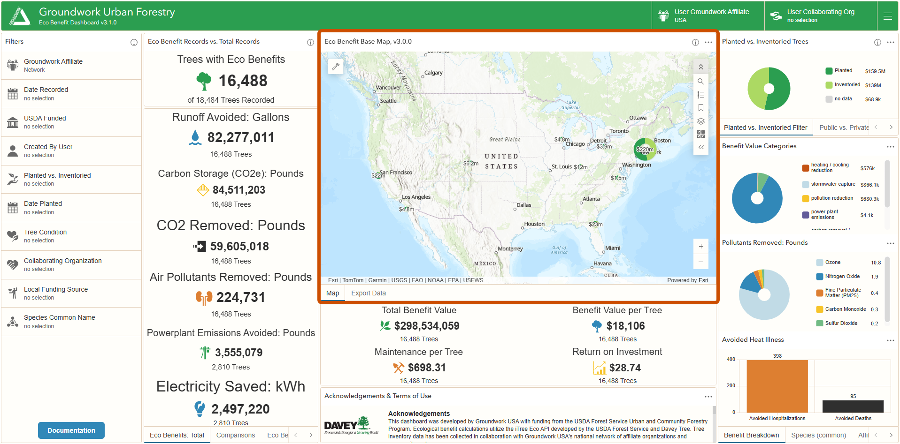

49 widgets | Click group headers to show/hide descriptions, click widgets to expand details
Individual Benefits
The core benefit metrics of the Eco-Benefit Dashboard. These widgets quantify the specific environmental services your urban forest provides over 25 years—stormwater management, carbon sequestration, air quality improvement, and energy conservation. The "Eco Benefits (Total)" tab shows raw physical measurements (gallons, pounds, kWh) for all included trees. The "Comparisons" tab converts these to relatable units like Olympic pools or cars removed for comprehension and communication. The "Eco Benefit (Tree)" tab calculates averages to benchmark per-tree performance. The "Eco Benefit Value ($)" tab converts benefits to economic values (USD2025) using federal social cost estimates and regional infrastructure costs.

Individual Benefits widgets in the Eco-Benefit Dashboard
Eco Benefits (Total)
Runoff Avoided: Gallons
Source: iTree
Description
Total stormwater runoff intercepted by all trees over 25 years. Calculated by iTree Eco based on tree species, canopy size, local rainfall patterns, and site conditions. Trees capture rain on leaf surfaces (interception) and increase soil infiltration around roots (infiltration).
What It Says
How many gallons of stormwater your urban forest prevents from entering drainage systems over 25 years. Larger trees and species with dense canopies provide greater interception and infiltration.
What It Doesn't Say
Does not include runoff reduction from increased soil permeability beyond the tree's root zone, or benefits from preventing erosion and filtering pollutants. Excludes trees without valid iTree inputs.
How To Use It
Compare against stormwater infrastructure capacity (pipes, detention basins) or calculate cost savings vs. gray infrastructure alternatives. Use Olympic pool comparison for public communication.
CO2 Equivalent of Carbon Stored: Pounds
Source: iTree
Description
Total carbon dioxide equivalent stored in tree biomass (wood, branches, roots) across all trees over 25 years. This is the standing stock accumulated over each tree's 25-year span, converted to CO2 equivalent. Represents carbon that would be released if trees were removed.
What It Says
The climate value locked in your existing urban forest. Larger, older trees store significantly more carbon than young trees. This is a snapshot of current storage, not annual sequestration. "We're currently preventing X tons of carbon from entering the atmosphere."
What It Doesn't Say
Does not measure annual carbon capture (see CO2 Removed from Atmoshpere). Carbon storage only persists while trees remain alive.
How To Use It
Justify preservation of mature trees in development decisions. Show the climate cost of tree removal. Use "cars removed" comparison for public understanding. Pair with sequestration to show both storage and ongoing capture.
CO2 Removed from Atmosphere: Pounds
Source: iTree
Description
Total carbon dioxide removed from the atmosphere through tree growth over 25 years. As trees photosynthesize and add biomass (wood, branches, roots), they sequester atmospheric CO2. This is the cumulative total of annual CO2 removed across all years.
What It Says
The climate mitigation value of tree growth over 25 years. Young, fast-growing trees sequester more annually than mature trees, but large trees contribute greater total mass. "We prevented X tons of CO2 from entering atmosphere"
What It Doesn't Say
This measures annual removal of CO2, not the carbon already stored in existing biomass (see Carbon Stored).
How To Use It
Use for climate action plans and carbon offset calculations. Compare to vehicle emissions using "cars removed" or "flights" comparisons. Pair with Carbon Stored to show total carbon impact.
Air Pollutants Removed: Pounds
Source: iTree
Description
Total air pollutants (CO, NO₂, SO₂, O₃, PM2.5, PM10) removed by tree leaves and bark over 25 years. Calculated by iTree Eco using dry deposition model based on species-specific leaf area, local air quality data, and deposition velocities. Trees absorb gaseous pollutants and intercept particulate matter.
What It Says
The air quality improvement your trees provide, particularly important in environmental justice communities near pollution sources. Larger leaf surface area and longer growing seasons increase removal.
What It Doesn't Say
Does not include indirect air quality benefits from reduced building energy demand (see Powerplant Emissions Avoided). Pollutant removal rates vary by species, season, and local pollution levels. Trees don't eliminate pollution sources.
How To Use It
Support tree planting in high-pollution corridors and environmental justice neighborhoods. Link to public health outcomes and asthma rates. Use "elephants" comparison for memorable public communication.
Powerplant Emissions Avoided: Pounds
Source: iTree
Description
Pollutants not emitted by power plants over 25 years due to reduced building energy demand from tree shade and windbreak effects. Only calculated for trees within 60 feet of buildings 3 stories or shorter. Based on regional electricity generation mix and emission rates.
What It Says
Indirect air quality benefit from energy conservation. Trees reducing cooling and heating loads mean power plants burn less fuel. Most significant in areas with fossil fuel-heavy electricity generation.
What It Doesn't Say
Only applies to subset of trees meeting building proximity criteria—check reference tree count. Benefits depend on regional energy sources; cleaner grids show smaller emission reductions. Does not include direct pollutant removal by leaves.
How To Use It
Complement direct air quality benefits (Pollutants Removed). Show connection between tree planting and energy policy. Stronger argument in regions with coal or natural gas generation. Pair with electricity savings metric.
Heating Energy Saved: MBTU
Source: iTree
Description
Heating energy (natural gas, oil, electric heat) saved over 25 years through windbreak effects minus heating energy lost through winter shade. Only calculated for trees within 60 feet of buildings 3 stories or shorter. Trees reduce wind infiltration but can block beneficial winter sun, especially on south-facing walls. Net result can be positive or negative.
What It Says
Net winter energy impact from trees. Positive values mean windbreak benefit exceeds shade penalty. Negative values mean winter shade blocks more solar heat gain than the tree saves through wind reduction. Most effective for evergreens on north/northwest sides of buildings.
What It Doesn't Say
Only applies to subset of trees meeting building proximity criteria—check reference tree count. Climate zone strongly affects results: cold climates often show negative values due to high solar heating value, while moderate climates show positive values where windbreak benefits dominate.
How To Use It
Identify which tree placements provide net heating benefits vs. penalties. Support strategic evergreen planting on windward sides (north/northwest) while avoiding deciduous trees blocking south-facing walls. Negative values aren't failures—they reveal important placement considerations for future plantings.
Electricity Saved: kWh
Source: iTree
Description
Electricity saved or lost over 25 years from trees near buildings. Calculated for trees within 60 feet of buildings 3 stories or shorter. Includes cooling energy saved when trees shade air conditioners and reduce summer heat gain, minus heating energy penalty when winter shade blocks beneficial solar heat gain on building surfaces.
What It Says
Net electricity impact from trees. Positive values mean cooling savings exceed heating penalties. Negative values mean winter shade blocks more solar heat gain than the tree saves in summer cooling energy. Most significant in climates with substantial cooling loads.
What It Doesn't Say
Only applies to subset of trees meeting building proximity criteria—check reference tree count. Heating penalty is applied as a regional default based on climate zone assumptions about electric heating prevalence, regardless of actual building heating fuel type. Does not distinguish between buildings with electric vs. gas heat.
How To Use It
Identify which climates and tree placements provide net cooling benefits vs. penalties. Support strategic tree planting on west/south exposures for AC savings while avoiding placements that block winter sun. Negative values reflect conservative methodology—actual benefit may be higher if buildings use gas heating.
Comparisons
Runoff Avoided: Olympic Swimming Pools
Source: GWUSA
Description
Gallons of runoff converted to Olympic swimming pools (660,432.25 gallons per pool). Conversion makes large stormwater numbers relatable and memorable for public audiences. Based on Wikipedia Olympic pool specifications (50m × 25m × 2m minimum depth).
What It Says
A visual, tangible way to communicate stormwater volume. "Our trees intercept enough water to fill X Olympic pools" is more compelling than gallons for general audiences.
What It Doesn't Say
This is purely a unit conversion for communication—it doesn't change the underlying hydrological benefit. The conversion assumes standard Olympic pool dimensions.
How To Use It
Public presentations, press releases, social media, and community reports. Help non-technical audiences grasp scale.
CO2 Equivalent of Carbon Stored: Cars Removed for 25 Years
Source: GWUSA
Description
Carbon storage converted to passenger vehicles removed from roads for 25 years. Average car emits 4,600 kg CO₂ per year (EPA). Calculation: total kg CO₂ stored ÷ 4,600 ÷ 25 = cars removed for full 25-year period.
What It Says
Connects tree preservation to transportation emissions. "Keeping these trees standing is equivalent to removing X cars from roads for 25 years" resonates with climate-conscious audiences.
What It Doesn't Say
This represents standing stock, not annual sequestration. Carbon only remains stored while trees are alive—removal or death releases it. Comparison uses EPA average passenger vehicle emissions.
How To Use It
Integrate tree preservation into climate action plans. Counter arguments for tree removal in development. Link urban forestry to transportation sector emissions reductions. Use in climate messaging.
CO2 Removed from Atmosphere: Passengers Flying Around the World
Source: GWUSA
Description
CO₂ sequestration converted to round-the-world passenger flights. One passenger on round-the-world flight emits ~2,812 kg CO₂ (6,200 lbs), based on Terrapass data for NY-LA round-trip (1,240 lbs) scaled by distance ratio (×5 for circumference).
What It Says
Dramatic comparison highlighting carbon capture from tree growth. Makes abstract CO₂ sequestration tangible by referencing familiar activity.
What It Doesn't Say
Flight emissions are illustrative comparison only—trees don't directly offset aviation. Calculation uses scaled cross-country flight data, not actual around-the-world routes.
How To Use It
Climate storytelling for broad audiences. Social media and public presentations. Balance with more precise metrics (pounds CO₂) for technical audiences. Effective for demonstrating scale of tree planting programs.
Air Pollutants Removed: Elephants
Source: GWUSA
Description
Pounds of air pollutants converted to African elephant body weights (6,000 kg or 13,200 lbs per elephant). Provides memorable visual scale for abstract pollution removal numbers.
What It Says
Fun, shareable metric for social media and community presentations. Makes abstract pollution numbers tangible and engaging for general audiences.
What It Doesn't Say
Purely a weight comparison for communication purposes. Doesn't change the actual air quality benefit. Uses average African elephant weight as reference.
How To Use It
Public outreach campaigns, community presentations, and social media content. Particularly effective for youth and family audiences. Creates shareable, memorable talking points about air quality.
Powerplant Emissions Avoided: Miles Driven
Source: GWUSA
Description
Avoided emissions converted to vehicle miles not driven. Average passenger vehicle emits 0.4 kg CO₂ per mile (EPA). Calculation: kg emissions avoided ÷ 0.4 = equivalent miles not driven (or kg × 2.5 = miles).
What It Says
Links tree energy savings to transportation impact. "Our trees prevent emissions equivalent to X miles of driving" connects urban forestry to familiar emissions source.
What It Doesn't Say
This represents indirect emissions avoided through energy conservation, not direct offset of vehicle use. Based on EPA average vehicle emissions; actual emissions vary by vehicle type and fuel efficiency.
How To Use It
Public outreach campaigns, community presentations, and social media content. Creates shareable, relateable talking about emission reduction.
Heating Energy Saved: US Homes Powered for One Year
Source: GWUSA
Description
MBTUs of heating energy saved converted to annual household heating equivalents. Average US household uses 90 MBTU per year for heating (U.S. Energy Information Administration Residential Energy Consumption Survey).
What It Says
Household-scale framing for heating energy savings. Shows how trees reduce neighborhood energy demand in relatable terms. More significant in northern climates.
What It Doesn't Say
Assumes average household heating consumption; actual usage varies by climate, home size, and insulation. Only includes space heating, not total home energy use.
How To Use It
Demonstrate heating cost savings to homeowners and property managers. Support weatherization and energy efficiency programs. More compelling messaging in cold climate regions.
Electricity Saved: EV Miles Driven
Source: GWUSA
Description
kWh of electricity saved converted to electric vehicle miles driven. Average EV efficiency is 0.35 kWh per mile (EnergySage/Edmunds). Calculation: kWh saved ÷ 0.35 = equivalent EV miles.
What It Says
Modern comparison metric linking tree cooling benefits to electric vehicle charging. "Energy saved by our trees could power an EV for X miles" connects to clean energy transition.
What It Doesn't Say
This is a theoretical equivalency for communication. Doesn't mean electricity was actually used for EV charging. Based on average EV efficiency; varies by vehicle model and driving conditions.
How To Use It
Appeal to sustainability-minded audiences and EV owners. Connect urban forestry to clean energy and transportation goals. Use in climate action communications.
Eco Benefits (Tree)
Runoff Avoided: Gallons per Tree
Source: iTree
Description
Average stormwater runoff avoided per tree over 25 years. Total gallons divided by tree count.
What It Says
Average benefit per tree over 25 years. Can be used to project future planting programs and estimate total stormwater impact from proposed plantings. Helps benchmark typical tree performance for planning purposes.
What It Doesn't Say
Averages can mask wide variation. A few large trees may drive up average while many small trees contribute less. Does not indicate median or distribution of values. Not useful for diagnosing existing forest performance.
How To Use It
Project stormwater benefits of proposed planting programs: multiply average by number of trees to estimate total gallons intercepted. Compare species to select high-performing varieties for stormwater management sites.
CO2 Equivalent of Carbon Stored: Pounds per Tree
Source: iTree
Description
Average carbon storage per tree. Total CO₂ equivalent stored divided by tree count. Highly variable by species, age, and size—mature trees in current inventory store 10-100× more than newly planted saplings would initially.
What It Says
Average storage across all existing trees. Shows typical carbon stock per tree, but heavily influenced by existing mature trees. Not predictive of new planting performance since young trees start with near-zero storage.
What It Doesn't Say
Average masks extreme variation between young and mature trees. Newly planted trees contribute almost nothing to this average initially. Not useful for projecting new planting carbon storage in early years.
How To Use It
Demonstrate value of preserving existing mature tree canopy. Calculate carbon loss from proposed tree removal. Not recommended for projecting new planting benefits—use sequestration rate instead for growth projections.
CO2 Removed from Atmosphere: Pounds per Tree
Source: iTree
Description
Average CO₂ sequestration per tree over 25 years. Total sequestration divided by tree count. Shows cumulative carbon capture through growth. Young, fast-growing trees may sequester more annually than slow-growing mature trees.
What It Says
Average benefit per tree over 25 years. Use to project future planting programs: if average tree sequesters X pounds and you plant Y trees, expect Z total pounds captured. Helps identify species with high carbon capture rates.
What It Doesn't Say
Average includes both fast-growing young trees and slow-growing mature trees in current inventory. Does not predict species-specific performance—mixing young and old trees obscures growth patterns.
How To Use It
Project long-term carbon capture from planting programs. Prioritize fast-growing species for maximum sequestration. Compare to vehicle emissions using conversion factors to communicate climate impact.
Air Pollutants Removed: Pounds per Tree
Source: iTree
Description
Average air pollutant removal per tree over 25 years. Total pounds divided by tree count. Varies significantly by species leaf area, growing season length, and local air pollution levels.
What It Says
Average benefit per tree over 25 years. Use to project future planting programs: if average tree removes X pounds and you plant Y trees, expect Z total pounds removed. Helps identify high-performing species for air quality.
What It Doesn't Say
Average can be skewed by a few very large trees in current inventory. Pollutant removal depends heavily on local air quality—same species removes more in polluted areas.
How To Use It
Project air quality benefits of proposed planting programs. Select species with large leaf area and long growing seasons for environmental justice communities. Pair with local air quality data to target high-pollution corridors.
Powerplant Emissions Avoided: Pounds per Tree
Source: iTree
Description
Average avoided power plant emissions per tree over 25 years. Total pounds divided by tree count. Only includes trees within 60 feet of buildings 3 stories or shorter. Shows indirect air quality benefit from energy conservation.
What It Says
Average benefit per tree over 25 years for energy-saving planting placements. Average reflects only the subset meeting proximity criteria.
What It Doesn't Say
Only relevant for subset of trees meeting proximity criteria. Regional electricity sources heavily influence this metric—electricity savings in coal-powered regions avoid more emissions than savings in renewable-powered regions.
How To Use It
Emphasizes environmental protection and cost savings for regional utilities.
Heating Energy Saved: MBTU per Tree
Source: iTree
Description
Average heating energy saved or lost per tree over 25 years. Total MBTU divided by tree count. Only calculated for trees within 60 feet of buildings 3 stories or shorter. Net result of windbreak benefit minus winter shade penalty on solar heat gain.
What It Says
Average benefit per tree over 25 years for energy-saving placements. Can be positive (windbreak exceeds shade penalty) or negative (shade penalty exceeds windbreak benefit).
What It Doesn't Say
Only relevant for subset meeting proximity criteria. Average includes many trees providing zero benefit. Climate zone heavily influences results—can be negative in cold climates where winter sun blocking dominates.
How To Use It
Emphasizes household benefit of tree planting.
Electricity Saved: kWh per Tree
Source: iTree
Description
Average electricity saved or lost per tree over 25 years. Total kWh divided by tree count. Only calculated for trees within 60 feet of buildings 3 stories or shorter. Includes cooling savings minus heating penalty from winter shade blocking solar heat gain.
What It Says
Average benefit per tree over 25 years for energy-saving placements. Can be positive (cooling savings exceed heating penalty) or negative (heating penalty dominates). Most trees provide zero benefit (not near buildings).
What It Doesn't Say
Only relevant for subset meeting proximity criteria. Heating penalty applied as regional default regardless of actual building heating fuel type—conservative methodology may underestimate actual benefit.
How To Use It
Most useful in hot climates with long cooling seasons. Most useful for west/south building exposures. Can be negative in cold climates—review regional data before projecting. Emphasizes household benefit of tree planting.
Eco Benefit Value
Runoff Avoided: Value
Source: iTree
Description
Economic value of stormwater interception over 25 years, converted to USD2025. Based on avoided costs of stormwater treatment and management using regional rates from USFS Community Tree Guides. Adjusted for inflation and discounted to present value at 3%.
What It Says
The infrastructure cost savings from trees managing stormwater instead of engineered systems. Represents how much it would cost to handle this volume through gray infrastructure.
What It Doesn't Say
Does not include co-benefits like reduced combined sewer overflows, improved water quality, aquifer recharge, or flood damage prevention. Only values volume interception, not treatment or timing benefits. This means that actual benefits are likely greater.
How To Use It
Justify green infrastructure investments in stormwater master plans. Compare tree planting costs to pipe/basin construction. Support municipal budget requests and grant applications for tree programs tied to storm water management.
CO2 Equivalent of Carbon Stored: Value
Source: iTree
Description
Economic value of carbon currently stored in tree biomass (wood, branches, leaves, roots), converted to USD2025. Based on federal social cost of carbon estimates (~$51/metric ton CO₂ with 3% discount rate), which monetize damages from climate change including agricultural losses, human health impacts, flood risk, and ecosystem degradation. Storage is valued cumulatively over 25 years—iTree's methodology for aggregating these values with NPV discounting is applied internally. Represents climate damage that would occur if this stored carbon were released to atmosphere.
What It Says
The climate value of preserving existing trees. Based on the social cost of carbon—an estimate of economic damages from releasing one ton of CO₂ (including impacts like sea level rise, agricultural losses, and extreme weather). Shows the economic cost of releasing this stored carbon through tree removal, death, or decay beyond expected mortality rates.
What It Doesn't Say
Social cost of carbon is contested—estimates range from under $50 to over $400 per metric ton CO₂ depending on discount rate and climate damage assumptions. iTree uses ~$51/ton (near the low end of this range), making these valuations conservative compared to many academic and policy estimates. Different federal administrations have used vastly different SCC values. The specific calculation iTree uses to aggregate cumulative 25-year storage values is not fully detailed in public documentation. Does not include co-benefits like reduced urban heat or air quality improvements. Value only persists while trees remain alive.
How To Use It
Calculate climate cost of proposed tree removal in development projects. Support tree preservation ordinances with economic data. Integrate into environmental review and permitting processes. Justify maintenance investments to prevent mortality.
CO2 Removed from Atmosphere: Value
Source: iTree
Description
Economic value of CO₂ sequestered through photosynthesis over 25 years, converted to USD2025. Based on federal social cost of carbon estimates (~$51/metric ton CO₂ with 3% discount rate), which monetize avoided damages from climate change including agricultural losses, human health impacts, flood risk, and ecosystem degradation. Represents climate damage prevented by removing this CO₂ from the atmosphere through tree growth. Adjusted for inflation and discounted to present value at 3%.
What It Says
The climate mitigation value of tree growth. Shows economic benefit of planting and stewarding trees that actively capture carbon over 25 years.
What It Doesn't Say
Social cost of carbon is contested—estimates range from under $50 to over $400 per metric ton CO₂. iTree uses ~$51/ton (near the low end), making these valuations conservative. Does not include indirect benefits like reduced fossil fuel extraction or ocean acidification prevention beyond what's captured in the SCC damage estimates.
How To Use It
Calculate net present value of tree planting programs for climate mitigation. Support carbon offset programs and climate action plans. Demonstrate climate ROI of urban forestry investments compared to other carbon reduction strategies.
Air Pollutants Removed: Value
Source: iTree
Description
Economic value of air pollutant removal over 25 years, converted to USD2025. Valuation varies by pollutant: NO₂, O₃, PM2.5, and SO₂ use health impact modeling via EPA's BenMAP methodology, estimating avoided healthcare costs, productivity losses, and value of statistical life based on local population and epidemiological data; CO uses externality cost estimates representing societal costs not captured in market prices. Pollution removal rates vary by county based on local tree cover, weather, pollution concentrations, and boundary layer dynamics. Adjusted for inflation and discounted to present value at 3%.
What It Says
The public health and economic value of cleaner air from urban trees. Shows benefit of tree canopy in reducing air pollution-related illness, premature death, and productivity losses. Higher in areas with worse baseline air quality and higher population density. Benefits vary by pollutant type and local meteorological conditions.
What It Doesn't Say
Health impact estimates use population-level epidemiological relationships and may not reflect individual outcomes. Only estimates pollution removal and concentration reduction—does not account for trees' effects on wind patterns that may increase local concentrations, potential pollution formation from tree emissions (VOCs), or health impacts from tree pollen. Assumes adequate soil moisture; may overestimate removal during drought for NO₂, SO₂, and O₃. Pollution concentration data often from single monitoring station representing entire area.
How To Use It
Justify tree planting in environmental justice communities with poor air quality. Support policies linking urban forestry to public health outcomes. Calculate cost-effectiveness of tree-based air quality strategies. Prioritize planting in high-traffic corridors or near pollution sources where removal rates are highest. Consider alongside pollutant emission data to understand net air quality impact.
Powerplant Emissions Avoided: Value
Source: iTree
Description
Economic value of avoided power plant emissions over 25 years, converted to USD2025. When trees reduce building energy demand, power plants emit less pollution. Value based on: CO₂ and CH₄ use social cost of carbon (~$51/ton CO₂); other pollutants (NOₓ, SO₂, CO, VOCs, PM10, PM2.5) use externality cost estimates including health impacts, building/material damage, and crop losses. State-specific emission factors applied based on regional fuel mix and power generation sources. Only calculated for trees within 60 feet of residential buildings 3 stories or shorter. Adjusted for inflation and discounted to present value at 3%.
What It Says
The air quality value of energy conservation from strategically-placed trees. Shows combined climate and pollution benefits from reducing fossil fuel combustion at power plants. Larger in regions with coal/gas-heavy electricity generation.
What It Doesn't Say
Only applies to subset of trees meeting proximity criteria. Benefits heavily depend on regional electricity generation mix—renewable-heavy grids show much lower values. Emission factors are state averages and may not reflect local utility sources. Does not include direct pollutant removal by tree canopy (see Pollutants Removed Value). CH₄ emissions/value not yet incorporated in iTree.
How To Use It
Connect urban forestry to climate and air quality policy. Demonstrate co-benefits of residential energy efficiency. Prioritize planting in regions with fossil fuel-dominant electricity generation where avoided emissions are highest.
Heating Energy Saved: Value
Source: iTree
Description
Economic value of heating energy saved or lost over 25 years, converted to USD2025. Based on avoided costs of residential heating fuels (weighted by state mix of natural gas, fuel oil, and wood/other) from windbreak effects minus increased costs from winter shade blocking beneficial solar heat gain. State-specific fuel costs and building fuel distribution applied. Only for trees within 60 feet of residential buildings 3 stories or shorter. Adjusted for inflation and discounted to present value at 3%.
What It Says
The net winter energy impact value from windbreak planting. Can be positive (windbreak benefit exceeds shade penalty) or negative (shade penalty dominates). Shows dollar value of heating bill changes for property owners.
What It Doesn't Say
Only applies to subset meeting proximity criteria. Energy prices vary regionally and fluctuate over time. Can be negative in cold climates where blocking winter sun outweighs windbreak benefits.
How To Use It
Calculate ROI for evergreen windbreak programs in moderate climates. Demonstrate heating savings for strategic north/northwest placements. Be cautious in cold climates—may show net costs rather than savings.
Electricity Saved: Value
Source: iTree
Description
Economic value of electricity saved or lost over 25 years, converted to USD2025. Based on state electricity rates applied to: reduced air conditioning demand from summer shade (positive) minus increased electric heating demand from winter shade blocking solar heat gain (negative, applied as regional default). Only for trees within 60 feet of residential buildings 3 stories or shorter. Adjusted for inflation and discounted to present value at 3%.
What It Says
Net electricity cost impact from trees. Can be positive (cooling savings exceed heating penalty) or negative (heating penalty dominates). Shows dollar value of electricity bill changes, particularly in hot climates.
What It Doesn't Say
Only applies to subset meeting proximity criteria. Electricity prices vary regionally and seasonally. Heating penalty applied as regional default—actual benefit may be higher if buildings use non-electric heating.
How To Use It
Calculate ROI for shade tree programs in hot climates with long cooling seasons. Support utility rebate programs. Demonstrate cooling cost savings. Can be negative in cold climates—review regional patterns before projecting benefits.
Summary Benefit Value
High-level aggregated metrics that combine all benefit categories into single summary numbers. These widgets answer the question "What's the total value of our urban forest?" by summing across stormwater, carbon, energy, air quality, and health benefits. Includes total benefit value, average benefit per tree, and return on investment (ROI) calculations that compare benefit value to estimated planting and maintenance costs. These are your headline numbers for grant applications, executive summaries, and program impact reports.

Summary Benefit Value widgets in the Eco-Benefit Dashboard
Summary Metrics
Total Benefit Value
Source: iTree, GWUSA
Description
Sum of benefit value across all benefit metrics for all trees with valid eco benefit input. Adjusted to USD2025, discounted to net present value at 3%, and reduced by mortality rate (1.5% annually) to account for expected tree losses. Includes both newly planted and previously inventoried trees.
What It Says
The total economic return your urban forest delivers over 25 years. This is the headline number showing aggregate value across all services trees provide.
What It Doesn't Say
Does not subtract planting or maintenance costs (see ROI for net return). Does not include non-quantified benefits like aesthetics, property value, mental health, community cohesion, or wildlife habitat. Assumes trees survive at modeled mortality rate.
How To Use It
Lead with this in grant applications, budget requests, and program impact reports. Use to demonstrate that urban forestry is cost-effective infrastructure investment. Pair with ROI to show net financial benefit after accounting for costs.
Benefit Value per Tree
Source: iTree, GWUSA
Description
Total Benefit Value divided by tree count. Shows average 25-year dollar value delivered per tree, adjusted to USD2025 with 3% NPV discount and mortality adjustment (1.5% annually).
What It Says
Average economic return per tree over 25 years.
What It Doesn't Say
Average masks wide variation—a few large, mature trees may deliver 10-100× the benefits of small trees. Does not show distribution or median values. Includes both high-performing and low-performing individual trees.
How To Use It
Project benefits of proposed planting programs: "Each tree will deliver ~$X over 25 years." Support species selection and site planning decisions. Calculate per-tree investment needed to justify program costs.
Maintenance per Tree
Source: USDA Regional Tree Guides
Description
Estimated planting and maintenance costs per tree over 25 years based on USDA regional cost models. Differentiated by tree size category (small, medium, large) and geographic region. Includes initial planting, establishment watering, pruning, mulching, and proportional share of eventual removal costs amortized over tree lifespan.
What It Says
The investment required to establish and maintain trees over 25 years. USDA annual maintenance cost summed for 25 years. Provides cost baseline for ROI calculations and budget planning.
What It Doesn't Say
Not based on Groundwork Affiliate actual planting and maintenance cost. Actual maintenance costs vary by management intensity, species requirements, and local labor rates. Does not include pest/disease treatment, storm damage repair, or liability costs. Assumes standard municipal forestry practices.
How To Use It
Budget for long-term tree stewardship programs. Calculate total program costs for funding requests. Compare against benefit value to demonstrate ROI. Inform staffing and equipment needs for maintenance programs.
Return on Investment
Source: iTree, GWUSA, USDA Regional Tree Guides
Description
Ratio of Total Benefit Value to estimated planting and maintenance costs over 25 years. Based on USDA regional cost models differentiated by tree size and region. Includes both initial planting costs and ongoing maintenance. Formula: Total Benefits ÷ Total Costs. Includes inventoried trees to show stewardship value.
What It Says
For every dollar spent on planting and maintaining trees, how many dollars of ecosystem services are returned. An ROI of 4.0 means $4 in benefits for every $1 invested.
What It Doesn't Say
Does not account for variation in actual maintenance practices—some programs maintain more intensively than USDA averages. Includes existing inventoried trees (unless filtered out) because stewardship investment still generates returns.
How To Use It
Financial justification for program funding. Answer the question "Are trees worth it?" for budget-conscious stakeholders. Shows urban forestry as smart public investment, not just environmental amenity. Compare to ROI of other municipal infrastructure.
Acknowledgements & Terms of Use
Source: GWUSA
Description
Legal and attribution text acknowledging funding sources (USDA Forest Service Urban and Community Forestry Program), technical collaborators (USDA Forest Service iTree Eco API, Davey Tree), and data collection partners (Groundwork USA Affiliate Network). Includes terms of use specifying data source (iTree Eco API with peer-reviewed methodologies), data accuracy limitations (field inspection conditions, model estimates, local variability), appropriate use cases (planning, education, informational purposes only), and liability disclaimers. Defines data limitations and establishes that benefit values are estimates, not financial guarantees.
What It Says
This dashboard represents a collaborative effort between federal agencies, research institutions, local nonprofits, and community partners. The data comes from standardized scientific models applied to real field measurements, but includes inherent uncertainties from model assumptions, environmental variability, and changing tree conditions. Use this information for understanding general patterns and communicating program impact, not for precise property valuations or legal purposes.
What It Doesn't Say
N/A
How To Use It
Read before using dashboard data in formal reports, grant applications, or public communications to understand limitations and proper attribution. Cite funding sources and technical partners when presenting data externally. Use disclaimer language when publishing benefit values to set appropriate expectations about precision and uncertainty. Reference these terms when questions arise about data accuracy or liability.
Pie Chart Filters
Interactive filter controls that let you slice the dashboard data by different attributes. Use these to compare Inventoried vs New Planting trees, Public vs Private land, tree Condition categories, or Land Use types. When you select a filter, all other widgets update to show metrics for just that subset. Essential for analyzing which tree populations provide the greatest benefits, identifying priority areas for investment, or demonstrating impact by ownership or land use category.

Pie Chart Filter widgets in the Eco-Benefit Dashboard
Planting vs. Inventory Filter
New Planting vs. Inventoried
Source: user input
Description
Filter showing trees planted by your organization vs. trees that were already established when inventory began. "New Planting" means your organization planted it; "Inventoried" means it was already in the ground. This is about attribution, not age—a newly inventoried 50-year-old oak is "Inventoried."
What It Says
Which benefits come from your planting efforts vs. the value you're stewarding in existing trees. Helps differentiate program impact from inherited assets.
What It Doesn't Say
Age and planting year are separate from this designation. A tree planted last year by another organization would be "Inventoried" if you didn't plant it. Does not indicate tree maturity or establishment date. Historical tree plantings by Groundwork Affiliates are considered "new plantings" even if they were planted 10 years ago (an old "new planting"). This language ("new planting" vs. "inventoried") was adopted for the field collection tool where it's application is clearer.
How To Use It
Track program-specific ROI (filter to New Plantings only). Show funders the direct impact of their investment. Justify both planting programs and maintenance of existing canopy. Compare benefit trajectories of new vs. mature trees.
Public vs. Private Filter
Public vs. Private
Source: user input
Description
Filter showing trees by ownership: publicly-owned land (parks, streets, municipal property) vs. privately-owned land (residential, commercial, institutional). Determined by data collectors during field inventory.
What It Says
Which sector's trees deliver the most benefits. Helps target programs and partnerships. Shows public investment in street trees vs. private property canopy contributions.
What It Doesn't Say
Ownership classification made during field work—may not match legal parcel data. Some institutional or quasi-public land may be classified as private. Doesn't indicate management responsibility or access rights.
How To Use It
Target partnerships with private landowners to increase canopy in underserved areas. Justify public investment in street tree programs vs. private property tree support. Calculate public vs. private sector benefit distribution for equity analysis. View benefits of residential planting programs.
Condition Filter
Tree Condition (count)
Source: user input
Description
Filter showing tree count by health condition (Excellent, Good, Fair, Poor, Critical, Dead, Dying). Assessed by data collectors using standardized condition rating protocol during field inventory.
What It Says
Overall forest health distribution. Identifies trees needing intervention (poor/critical condition) vs. healthy, high-performing trees. Tracks program success over time.
What It Doesn't Say
Condition ratings are subjective and vary by assessor training. Does not predict future mortality or diagnose specific problems. Dead/dying trees may still be included if not yet removed from inventory.
How To Use It
Prioritize maintenance for trees in poor/critical condition. Track forest health trends over time as indicator of program effectiveness. Identify areas with high mortality for replanting or management intervention. Demonstrate healthy trees have greater benefits thus justifying more intensive maintenance.
Land Use Filter
Land Use
Source: user input
Description
Filter showing trees by land use type (Residential, Commercial, Industrial, Parks, Institutional, etc.) as determined by data collectors during field inventory. This is observed land use, not legal zoning or parcel designation.
What It Says
Which land use types contain the most trees and generate the most benefits. Helps target planting and stewardship programs geographically.
What It Doesn't Say
Land use classification is observational by field staff, not from legal parcel layers or zoning maps. Categories may not match municipal land use planning designations. Mixed-use areas may be simplified to primary use.
How To Use It
Identify underserved land use types for targeted planting. Support land use planning with tree benefit data. Demonstrate value of trees in industrial/commercial areas. Compare residential vs. non-residential canopy and benefits.
Misc. Benefit
Additional benefit visualizations that are outside other widget groups. Includes the Pollutants Removed pie chart (breaking down PM2.5, O₃, NO₂, SO₂, CO by proportion) and the Heat Illness widget (showing avoided hospitalizations and deaths from urban cooling). These widgets provide deeper insight into specific benefit categories—use the pollutant breakdown to target messaging to air quality concerns, and use heat illness prevention data to support climate adaptation and public health initiatives.

Misc. Benefit widgets in the Eco-Benefit Dashboard
Benefit Breakdown
Benefit Value Categories
Source: iTree, GWUSA
Description
Pie chart showing how Total Benefit Value is distributed across benefit categories (stormwater, carbon sequestration, carbon storage, air quality, energy, heat illness). Proportions driven by social cost of carbon (high for carbon) and value of statistical life (high for heat illness prevention).
What It Says
Which ecosystem services deliver the most economic value. Carbon and heat illness often dominate due to high social cost of carbon and VSL (value of statistical life) in health calculations.
What It Doesn't Say
Proportions reflect economic valuation methodology, not necessarily physical impact. High carbon value driven by social cost assumptions. High heat illness value uses conservative VSL estimates. Doesn't show which benefits matter most to local stakeholders.
How To Use It
Identify primary value drivers for program messaging. Understand why total value is distributed as it is. Explain to stakeholders that high carbon/health values reflect economic methodology, not physical measurement.
Pollutants Removed: Pounds
Source: iTree
Description
Pie chart showing pounds of each air pollutant removed (CO, NO₂, SO₂, O₃, PM2.5, PM10). Distribution depends on local air quality—polluted areas show more removal. O₃ (ozone) and PM2.5 often largest due to prevalence in urban air.
What It Says
Which specific pollutants your trees are removing. Helps connect to local air quality concerns (e.g., high PM2.5 near highways, high O₃ in summer smog).
What It Doesn't Say
Removal rates vary by local pollution levels—trees remove more where air is dirtier. Does not indicate whether pollution levels meet EPA standards. Trees reduce but don't eliminate pollutants; source control is still needed.
How To Use It
Identify which pollutants your forest removes most effectively to target communication. Emphasize PM2.5 for respiratory health advocates, ozone for air quality non-attainment areas. Compare your pollutant removal profile to local air quality challenges to demonstrate strategic tree planting value.
Avoided Heat Illness
Source: GWUSA
Description
Count of heat-related hospitalizations and mortality cases prevented over 25 years. Based on Affiliate-specific incidence rates (avoided hospitalizations and deaths per tree annually) reverse-engineered from Earth Economics urban forestry analysis. Rates vary by region reflecting local climate severity and population vulnerability—ranging from 0.00005 to 0.033 hospitalizations per tree per year, and 0.00005 to 0.001 deaths per tree per year. Summed over 25 years with tree mortality adjustment.
What It Says
Public health benefit of urban forest cooling during extreme heat events. Shows lives saved and healthcare costs avoided through temperature reduction.
What It Doesn't Say
This is a regional model, not tree-specific—can't attribute specific cases to individual trees. Uses Affiliate-specific rates that may not reflect micro-climate variations.
How To Use It
Link urban forestry to public health and climate adaptation. Support heat action plans and vulnerable population protection. Demonstrate life-saving value of trees. Justify tree planting in heat island priority areas.
Species (common)
Species Count (common)
Source: user input
Description
Bar chart showing tree count by species using common names (Red Maple, Pin Oak, etc.). Reveals species diversity and dominance. High diversity generally indicates forest resilience.
What It Says
Which species are most abundant in your urban forest. Shows diversity. Identifies over-reliance on single species that creates vulnerability to pests/disease.
What It Doesn't Say
Count alone doesn't show tree size, health, or benefit delivery. A species with many small trees may contribute less than one with few large trees. Doesn't indicate whether species are appropriate for sites.
How To Use It
Track species diversity over time as forest health indicator. Identify monoculture risk (>20% of any single species). Guide species selection for new plantings to increase diversity. Support pest/disease risk assessment.
Benefit Value per Species (common)
Source: user input, iTree
Description
Bar chart showing average 25-year benefit value (USD25) per tree by species (common names). Helps identify high-performing vs. low-performing species. Large-growing species typically show higher per-tree value.
What It Says
Which species deliver the most economic value per tree on average. Informs strategic planting decisions when maximizing benefits is the goal.
What It Doesn't Say
Average value reflects both tree size and species characteristics. Fast-growing, large-canopy species rank high. Doesn't account for site appropriateness, maintenance needs, or longevity. High-value species may have higher costs.
How To Use It
Select high-value species for new plantings when site allows. Balance benefit potential with site constraints, diversity needs, and management capacity. Avoid over-planting high-value species at expense of diversity.
Species (scientific)
Species Count (scientific)
Source: user input
Description
Bar chart showing tree count by species using scientific names (Acer rubrum, Quercus palustris, etc.). Same data as common names but uses standardized scientific nomenclature.
What It Says
Species abundance using precise taxonomic names. Eliminates confusion from multiple common names for same species or same common name for different species.
What It Doesn't Say
Scientific names may be unfamiliar to general audiences. Same limitation as common name count—doesn't show size, health, or benefit contribution. Doesn't indicate site appropriateness.
How To Use It
Communicate with technical audiences (arborists, ecologists, researchers). Ensure precise species identification for pest/disease monitoring. Support research collaborations requiring standardized nomenclature. Compare to regional species lists.
Benefit Value per Species (scientific)
Source: user input, iTree
Description
Bar chart showing average 25-year dollar value (USD25) per tree by species (scientific names). Identical data to common names but uses standardized scientific nomenclature for precision.
What It Says
High-performing species using precise taxonomic identification. Useful for technical planning documents and research applications.
What It Doesn't Say
Scientific names may be unfamiliar to non-technical audiences. Same limitation as common name analysis—reflects size and species traits, not site appropriateness or diversity needs.
How To Use It
Technical planning documents requiring precise species identification. Share with landscape architects, urban foresters, and researchers. Support species trials and performance monitoring using standardized nomenclature.
Affiliate
Tree Count per Affiliate
Source: user input
Description
Bar chart showing total tree count for each Groundwork Affiliate in the Network. Only relevant for Network-level dashboard view showing multiple Affiliates.
What It Says
Which Affiliates have the largest inventories. Helps identify program scale differences across the Network. Shows investment in tree planting or inventory efforts.
What It Doesn't Say
Count alone doesn't indicate canopy coverage, tree health, or benefit delivery. Large count may include many small, young trees. Doesn't account for geographic area or population served.
How To Use It
Track Network-wide tree planting progress. Identify Affiliates needing inventory support or planting assistance. Celebrate program milestones. Support resource allocation across Network based on scale.
Total Eco Benefit Value ($)
Source: user input, iTree, GWUSA
Description
Bar chart showing Total Benefit Value for each Affiliate. Reflects both tree count and tree quality/size. Only relevant for Network-level dashboard view.
What It Says
Which Affiliates' urban forests deliver the most total economic value. Shows program impact across the Network. Larger, more mature forests typically rank higher.
What It Doesn't Say
Total value reflects both tree count and tree size/health. Large total may result from quantity or quality. Doesn't account for population served or geographic area. Climate and economic factors vary by region.
How To Use It
Demonstrate Network-wide program impact for national reporting. Identify high-performing Affiliates for best practice sharing. Support fundraising by showing aggregate Network value. Celebrate Affiliate success and justify program investments.
Eco Benefit Value ($) per Tree
Source: user input, iTree, GWUSA
Description
Bar chart showing average benefit value per tree by Affiliate. Controls for tree count differences, revealing forest quality and management effectiveness across the Network.
What It Says
Which Affiliates have the highest-value trees on average. Reflects tree maturity, species mix, and site quality more than quantity. Shows stewardship effectiveness.
What It Doesn't Say
Average can mask wide variation within Affiliate. High average may result from a few very large trees. Different climates and economic regions affect baseline valuations. Doesn't indicate program efficiency.
How To Use It
Identify best practices from high-performing Affiliates. Support peer learning on species selection and stewardship. Benchmark Affiliate performance.
Map Panel
The Map Panel contains two tabs. The first tab displays individual tree locations with pop-ups showing photos and detailed attribute data for each tree. Trees are visualized using proportional symbols based on their cumulative 25-year benefit value—larger symbols indicate higher-value trees. An alternative layer option shows trees symbolized by ROI instead. The second tab contains a table widget displaying the underlying tabular data for all trees. The 'Export Data' widget automatically filters to show only the current user's Affiliate data for security purposes, and respects any active dashboard filters (ownership, condition, land use, etc.).

Map Panel in the Eco-Benefit Dashboard
Map
Map
Source: GWUSA
Description
Interactive web map showing tree locations, benefit values, and spatial distribution. Allows visualization of benefit hotspots, gaps in canopy, and geographic patterns. Supports filtering by any dashboard criteria.
What It Says
Where benefits are concentrated geographically. Reveals spatial inequities, benefit hotspots, and planting opportunities. Supports place-based program planning.
What It Doesn't Say
Map shows current tree locations only. Does not show opportunity sites for new planting or areas lacking canopy. Benefit calculations are per-tree, not canopy coverage per area.
How To Use It
Review and share back distribution of tree plantings and their benefits. Identify environmental justice communities for planting. Show stakeholders where benefits are concentrated. Support equity analysis of tree distribution. Guide strategic planting to fill gaps. Communicate program impact geographically.
Export
Export Data
Source: GWUSA
Description
Export button to download filtered tree-by-tree data as CSV. Includes all benefit calculations, tree characteristics, and location data for trees currently displayed based on active filters. Automatically flters based on user's Groundwork Affiliate or Collaborating Organization.
What It Says
Download your data for external analysis, reporting, or integration with other systems. Allows custom analysis beyond dashboard capabilities.
What It Doesn't Say
Exported data reflects current filter state—may not include all trees if filters are active. Large exports may take time to generate. Data is snapshot of current calculations and will not update as more trees are added.
How To Use It
Share data with partners, consultants, or researchers. Conduct custom analysis in GIS or statistical software. Generate Affiliate-specific reports. Support academic research collaborations. Create backup of benefit calculations for internal records.